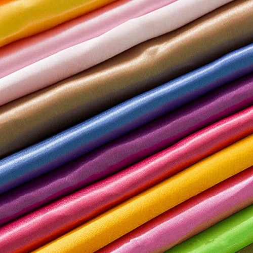

Unstitched Men Collections
Price: Rs.2500/-
Pure-linen: natural, breathable, eco-friendly fabric with a luxurious feel, perfect for clothing, home textiles, and sustainable living.
Price: Rs.2800/-
Pure-cotton: soft, breathable, versatile fabric made from natural fibers, ideal for clothing, bedding, and everyday essentials with comfort and durability.

Price: Rs.3000/-
Pure-silk: luxurious, smooth, natural fabric derived from silkworms, prized for its sheen, softness, and elegance in high-end fashion and textiles.
Price: Rs.2600/-
Woven cloth: Textile created by interlacing yarns at right angles, forming a structured fabric for garments, upholstery, and various applications.